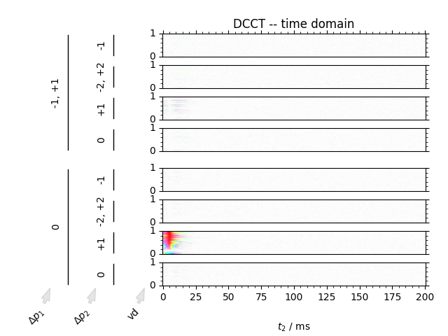

Note
Go to the end to download the full example code
Using the DCCT function¶
Visualize a simulated inversion recovery dataset utilizing the benefits of the DCCT plotting style.
We can image data in both the phase cycling domain, as well as the coherence transfer domain. Artifacts can clearly be discerned from signal in the coherence transfer domain as well as visualizing the inversion of phase using the domain colored plotting style.
- 

C:\Users\jmfranck\pyspecdata.0.log appears to be locked or otherwise inaccessible: I'm going to explore other options for fileno
---------- logging output to C:\Users\jmfranck\pyspecdata.1.log ----------
c:\users\jmfranck\git_repos\pyspecdata\pyspecdata\figlist.py:491: UserWarning: This figure includes Axes that are not compatible with tight_layout, so results might be incorrect.
plt.gcf().tight_layout()
from pylab import *
from pyspecdata import *
from numpy.random import normal, seed
from numpy.linalg import norm
import sympy as s
from collections import OrderedDict
seed(2021)
rcParams["image.aspect"] = "auto" # needed for sphinx gallery
# sphinx_gallery_thumbnail_number = 2
init_logging(level="debug")
with figlist_var() as fl:
# provide the symbols that we use for the fake data:
t2, td, vd, ph1, ph2 = s.symbols("t2 td vd ph1 ph2")
echo_time = 5e-3
data = fake_data(
# Give the functional form of the fake data.
# This is an inversion recovery with
# T₁ of 0.2
# T₂* broadening of 50 Hz
# (echo maximum at echo_time)
# amplitude of 21
# resonance offset 100 Hz
21
* (1 - 2 * s.exp(-vd / 0.2))
* s.exp(+1j * 2 * s.pi * 100 * (t2) - abs(t2) * 50 * s.pi),
# next we give our dimensions with outer loops first, as they
# would be acquired on the spectrometer
# (ordering does matter, because fake_data applies a
# time-dependent resonance variation -- see fake_data doc.)
OrderedDict(
[
("vd", nddata(r_[0:1:40j], "vd")),
("ph1", nddata(r_[0, 2] / 4.0, "ph1")),
("ph2", nddata(r_[0:4] / 4.0, "ph2")),
("t2", nddata(r_[0:0.2:256j] - echo_time, "t2")),
]
),
{"ph1": 0, "ph2": 1},
)
# reorder into a format more suitable for plotting
data.reorder(["ph1", "ph2", "vd", "t2"])
# fake_data gives us data already in the coherence domain, so:
data.ift(["ph1", "ph2"])
# keyword arguments to use throughout
dcct_kwargs = dict(
total_spacing=0.2,
label_spacing_multiplier=65,
LHS_pad=0.05,
)
fig = fl.next("raw data")
DCCT(data, fig, plot_title=fl.current, **dcct_kwargs)
fig = fl.next("DCCT -- time domain")
data.ft(["ph1", "ph2"])
DCCT(data, fig, plot_title=fl.current, **dcct_kwargs)
fig = fl.next("DCCT -- frequency domain")
data.ft("t2")
DCCT(data, fig, plot_title=fl.current, **dcct_kwargs)
Total running time of the script: ( 0 minutes 1.387 seconds)